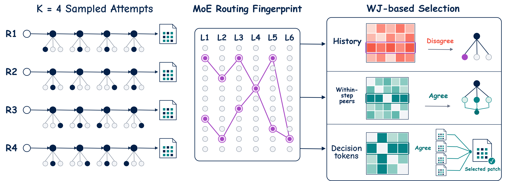
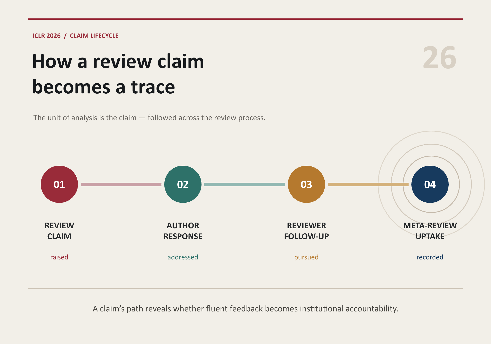

AI researcher · Fudan University
Junjie Nian 年骏杰
Building interpretable reasoning systems and more reliable AI agents.
I am an undergraduate researcher in Artificial Intelligence at Fudan University, working with the FudanNLP Alex Lab. My research interests broadly include reasoning models, AI agents, interpretability, and computational social science.
Selected work
Research in focus

TraceGraph
Maps multi-model agent trajectories into a shared decision landscape to reveal productive paths, traps, and recovery opportunities.

SliceGraph
Shows how successful reasoning runs can reach the same answer through distinct process families and shared intermediate states.

From Fluency to Accountability
Tracks how AI-like review claims move through author response, reviewer follow-up, and meta-review uptake in the ICLR 2026 review process.
Recent
Latest updates
-
ARM was accepted to the EMNLP 2026 Main Conference.
-
New paper: Disagree to Explore, Agree to Commit, introducing routing-guided test-time scaling for software agents.
-
Released From Fluency to Accountability, an open claim-lifecycle analysis of ICLR 2026 peer review.
-
New paper: MoE Routing as Signal for Reasoning Control.
-
Released TraceGraph and SliceGraph.
-
Thinking Traps in Long Chain-of-Thought published in Findings of ACL 2026.